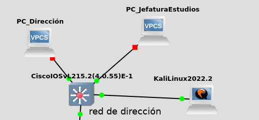
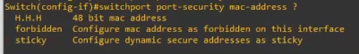

6.2.2 DHCP Starvation
1. Introducción
Un ataque de agotamiento DHCP (DHCP Starvation), un usuario malicioso inunda con peticiones DHCP el servidor utilizando diferentes direcciones MAC. Con esto, puede llegar a agotar por completo el espacio de direcciones asignables por los servidores DHCP por un período indefinido de tiempo.
Este ataque cada poco tiempo cambia la MAC y solicita una ip al servidor dhcp, y así sucesivamente hasta agotar el espacio de direcciones asignables.
2. Escenario
- Red de dirección de un centro educativo conectada a la interfaz de un switch Cisco con vlan 10.
- Router Mikrotik con interfaz conectada a la interfaz trunk del switch Cisco.
- Equipo kali que hará de atacante para agotar las ip's del servidor dhcp del router.

Figura 1. Esquema de red.
3. Realizar el ataque
En primer lugar, se configura un equipo Kali para solicitar una ip dinámica al servidor dhcp del router Mikrotik. La ip que le ha dado el servidor dhcp al equipo Kali es la siguiente: 192.168.10.2.
Figura 2. Ip obtenida dinámicamente en el equipo Kali.
Se consulta en el router Mikrotik la lista de ip's concedidas por el servidor DHCP, donde se observa la ip del equipo Kali.
Figura 3. Ip's otorgadas por el servidor dhpc del router Mikrotik.
Para hacer este ataque, se utilizarla aplicación yersinia que previamente hay que instalar:
#apt install yersinia
Una vez instalada, la ejecutamos en modo gráfico.
# yersinia -G
Una vez se abre, hay que lanzar un ataque de DHCP ‘sending DISCOVER Packet. Para ello, hay que acceder al menú Launch attack → Pestaña DHCP → sending DISCOVER Packet. A continuación, pulsar OK.
Figura 4. Lanzar el ataque.
Una vez se pulsa el OK, si nos vamos al equipo Mikrotik en la pestaña Leases, se puede observar que empieza a inundarla. En cuestión de un par de segundos agotamos el pool de direcciones DHCP disponibles.

De manera efectiva, el servidor DHCP queda inhabilitado y estamos en disposición de poner otro servidor DHCP maligno que le dará los parámetros de red que nosotros queramos y por tanto podemos capturar todo el tráfico si nos ponemos como gateway o podemos hacer DNS spoofing si servimos nuestra IP atacando como servidor DNS.
4. Securizar el Switch
Para securizar el Switch Cisco y evitar este ataque, vamos a configurar el puerto del Switch donde está conectado el equipo atacante, que este caso es el Gi0/3.
Igual que se realizó en el Ataque MAC flooding, hay que habilitar port security en las interfaces del Switch.
La configuración de las interfaces dependerá de cuantas direcciones MAC quremos que aprenda y que queremos que haga cuando llegue al máximo que se le establezca.

Si queremos que sólo se permita que aprenda una MAC específica, en concreto, la 0a04.aaf8.13ad, los comandos son los siguientes
Switch>ena
Switch#config terminal
Switch(config)#interface GigabitEthernet 0/1
Switch(config-if)#switchport mode access
Switch(config-if)#switchport port-security
Switch(config-if)#switchport port-security maximum 1
Switch(config-if)#switchport port-security violation shutdown
Switch(config-if)#switchport port-security mac-address 0a04.aaf8.13ad
Switch(config-if)#end
Si se quiere la auto-detección de la MAC usamos el sticky. En este caso, aprende la primera que pase.
Switch01>enable
Switch01#config terminal
Switch01(config)# interface GigabitEthernet 0/1
Switch01(config-if)#switchport mode access
Switch01(config-if)#switchport port-security
Switch01(config-if)#switchport port-security maximum 1
Switch01(config-if)#switchport port-security violation shutdown
Switch01(config-if)#switchport port-security mac-address sticky
Switch01(config-if)#end
En la directiva violation, podemos elegir entre protect, restrict y shutdown:
- Protect: sólo se permite tráfico de las MAC permitidas en la configuración descartando el tráfico del resto, no se notifica sobre la intrusión.
- Restrict: se envía una notificación SNMP al administrador y el tráfico del puerto se permite únicamente a las MAC especificadas, del resto se
descarta. - Shutdown (el más restricitivo): En esta directiva se le dice que hacer en este puerto cuando se llega al máximo. Para este caso se establecer el valor más restrictivo (shutdown) , es decir, cuando se llega al máximo, no se permiten más, es decir, el puerto se deshabilita.
Podemos utilizar mac-address sticky o forbiden.
-
- sticky: Se le dice que guarde las MACs que ya tenga y esas serán las MACS que se tengan aprendidas a partir de ahora hasta el máximo que se le haya establecido, que para este caso es 5 (maximum 5).
- forbiden: Con esta directiva se marcan las MAC como prohibidas.
Para acceder a la ayuda de la directiva mac-address, el comando es; switchport port-security mac-address ?

Para acceder a la ayuda de la directiva violation, el comando es; switchport port-security violation ?
Probando la Fortificación
Si probamos los 2 ataques anteriores, podremos observar que ya no se produce la inundación del servidor DHCP.
Ejemplo: Si hacemos yersinia -G y hacemos el ataque DHCP, vemos con show running-config que solo ha guardado/aprendido 5 MAC’S en el puerto Gi0/3..
Figura 5. Direcciones aprendidas en la interfaz Gi0/3 del switch.
En el siguiente vídeo, se describe el procedimiento para mitigar un ataque DHCP Starvation en un mismo dominio de broadcast de una red de un centro educativo, en concreto, en la red de dirección de un centro segmentada con VLAN's, y cómo se hace con la popular distribución Kali Linux.
Vídeo 1. Mitigar Ataque DHCP Starvation.
5. Referencias
Obra publicada con Licencia Creative Commons Reconocimiento No comercial Compartir igual 4.0